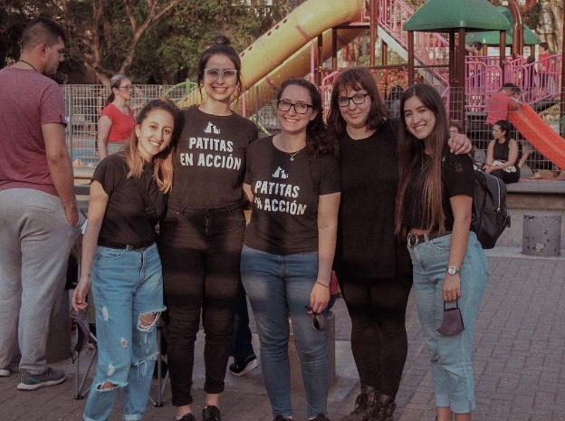

TRANSITAR
Ofrecete como hogar de tránsito
DONAR
Ayudanos a pagar los gastos de nuestros transitados
SOBRE PATITAS
Patitas en Acción comenzó en el 2019. Encontramos una cajita con seis cachorros y desde entonces no pudimos seguir siendo indiferentes. Con miedos y llenos de dudas fuimos aprendiendo con el pasar de los días y cada vez nos animamos a más. Algunos nos miran desde el cielo porque no llegamos a tiempo y de otros recibimos fotos en familia, corriendo en la playa y disfrutando de la vida que todos merecen. Hoy llevamos rescatados 700 perritos. Sabemos que en el total quizás no es tanto pero a muchos les cambiamos la vida. Cada rescatado que parte a un tránsito y luego encuentra a su familia para siempre, es un círculo cerrado. Es un animal menos sufiendo en la calle. Una perra pariendo sola. Es una camada menos de cachorros enfermándose.
